Dat Nguyen
A reasoning task is a question for which arriving at the correct answer requires the model to perform several intermediate steps of inference that are not directly retrievable from training data.
A useful working definition:
A reasoning task is one where the probability of a correct answer improves substantially when the model is allowed to produce intermediate "thinking" tokens before its final answer.
Contrast with knowledge tasks (“What is the capital of France?”) — there the answer is essentially a lookup, and intermediate tokens do not help.
Different domains, same underlying property: a verifiable final answer at the end of a non-trivial chain of inference.
The common thread: a deterministic, automatic check on the final output.
A reasoning model is an LLM that has been trained or prompted to produce extended chains of intermediate reasoning before its final answer, in a way that materially improves accuracy on reasoning tasks.
Two useful axes for distinguishing them:
<think> blocks) vs hidden (o1’s analysis channel)In modern usage, “reasoning model” almost always implies the third category: trained with RL on verifiable rewards so that long chains of thought are not just possible but learned.
These compose: a model that’s been trained with more RL also benefits more from extra inference compute. We will tour both, then connect them with a code walkthrough.
We’ll cover four widely-used evaluation paradigms, then return to which ones are usable as reward signals for RL.
A verifiable evaluation is one where a short deterministic program can decide, with no human in the loop and no second model, whether a given response is correct.
This single property is what makes RLVR (Reinforcement Learning with Verifiable Rewards) possible at scale.
The classic example, and the workhorse of every reasoning paper since R1, is math with a boxed final answer.
\boxed{...} conventionIn math reasoning datasets (MATH, AIME, GSM8K-style), the convention is for the model to put its
final answer inside \boxed{...} (LaTeX), so the verifier can extract it with a regex
and compare to the gold answer.
The full pipeline:
(question, gold_answer) pairs.\boxed{42}.r"\\boxed\{([^}]*)\}" pulls out "42".
1/2 == \frac{1}{2}, etc.).sympy.simplify(a - b) == 0 for symbolic answers) decides
correctness.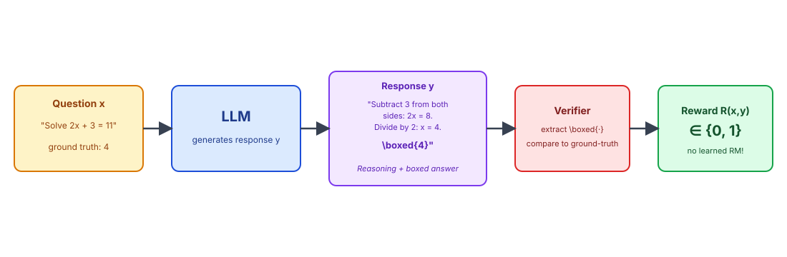
Three concrete examples of math problems where the answer is locked into \boxed{...}:
Example 1: GSM8K-style word problem
Q: Roger has 5 tennis balls. He buys 2 cans of 3 balls each. How many balls does he have now?
A: He starts with 5. New balls: 2 \times 3 = 6. Total: 5 + 6 =\boxed{11}.
Example 2: Algebra
Q: Solve for x: 2x + 3 = 11.
A: 2x = 11 - 3 = 8, so x = \boxed{4}.
Example 3: Competition (AIME-style)
Q: How many positive integers less than 100 are divisible by both 4 and 6?
A: lcm(4, 6) = 12. Multiples of 12 below 100: 12, 24, …, 96 → \boxed{8} numbers.
The same recipe generalizes well:
1
iff the proof type-checks.The cheapest, most widely deployed evaluation format: present a question and 4 fixed options (A/B/C/D), score the model on whether it picks the right letter.
Examples: MMLU (57 academic subjects), ARC (science), HellaSwag (commonsense), GPQA (graduate-level science).
Pros:
Cons:
Chatbot Arena (lmarena.ai) is the canonical example: real users send the same prompt to two anonymous models, vote on which answer is better, and an Elo rating is computed from the pairwise comparisons.
Pros:
Cons:
Usable as a north-star eval, not as a per-rollout reward.
A cheap proxy for human preference: ask a strong frontier model (GPT, Claude, Gemini) to score or rank responses.
Examples: MT-Bench (single answer scored 1–10), AlpacaEval (pairwise comparison vs reference), G-Eval, RewardBench.
Pros:
Cons:
| Evaluation | Cost | Deterministic? | Per-rollout reward? | Hackable? |
|---|---|---|---|---|
| Verifiable | Very low | Yes | Yes — used in RLVR | Hard |
| Multi-choice | Very low | Yes | Possible but format-distorting | Letter-bias gameable |
| Arena (human) | Very high | No | No (too slow) | Style-gameable |
| LLM judge | Low–med | Yes (per judge) | Yes (used in RLHF / RLAIF) | Yes — proxy hacking |
Only verifiable rewards combine all three properties needed for training-time scaling: cheap, deterministic, hard to hack. This is exactly why o1 / R1 / GRPO live in the math + code corner.
The cat sat on the mat
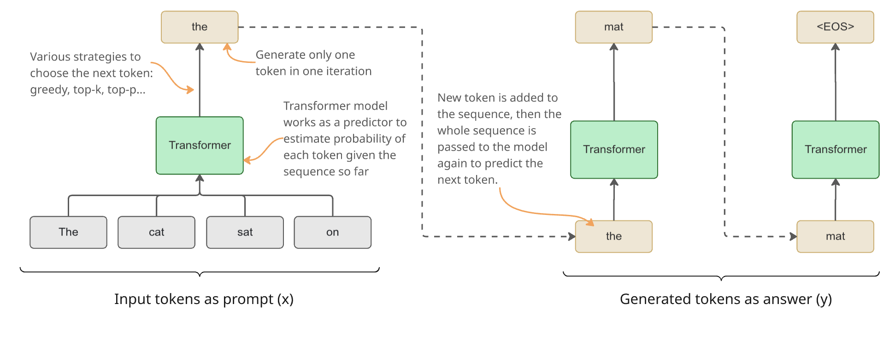
T = 1: the original model distribution \frac{\exp(z_i)}{\sum_{j \in V} \exp(z_j)}
T \to 0: distribution collapses onto the argmax → recovers greedy decoding.
T < 1: distribution becomes sharper → more deterministic, less diverse.
T > 1: distribution becomes flatter → more random, more creative.
In practice for reasoning models:
Note: temperature alone does not remove low-probability tokens — it only reshapes the distribution.
Sampling over the whole dictionary is costly, so usually combine it with top-k or top-p.
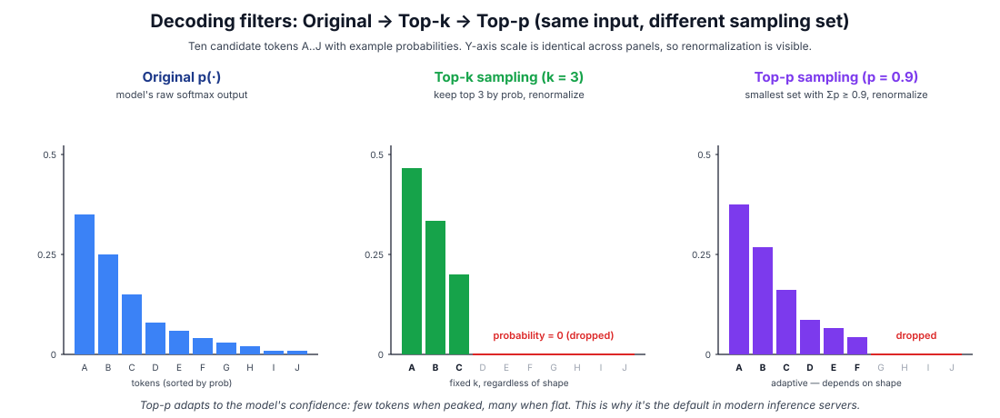
When a reasoning model "thinks," it is emitting tokens into the visible context, then attending back over those tokens on the next forward pass. "Thinking" is just more tokens spent before the final answer.
This means:
Inference-time scaling is any technique that improves a model’s performance on a task by spending more compute at generation time, without changing the model’s weights.
Three knobs you can turn:
All three trade FLOPs for accuracy. The art is knowing which to spend on which task.
Chain-of-Thought prompting is the simplest inference-time technique: instead of asking the model to jump straight to an answer, prompt it to write out the intermediate reasoning steps.
Two variants:
Both work surprisingly well on math, logic, and multi-step QA. CoT was the first widely-used technique that converted more tokens into more accuracy.
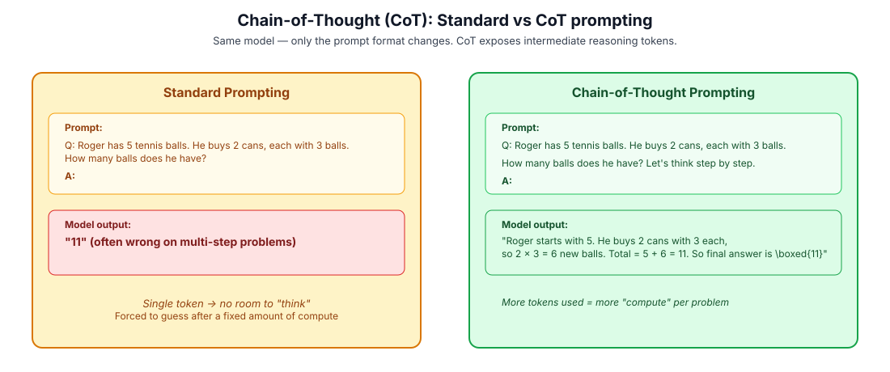
A few mutually reinforcing explanations for why CoT helps:
CoT is not free. A short list of where to use it and where to skip it.
Helps a lot on:
Helps little or hurts on:
A recurring practical lesson: CoT on a model that hasn’t been post-trained for reasoning can introduce as many errors as it fixes. Reasoning models trained with RLVR are far more robust to long CoT.
Self-consistency generalizes CoT: instead of one greedy reasoning chain, sample N independent CoTs at temperature > 0, then take the majority vote over the final answers.
The intuition is borrowed from ensembling and from how humans solve hard problems:
Cost is roughly N \times a single CoT, so this is a clean compute → accuracy dial.
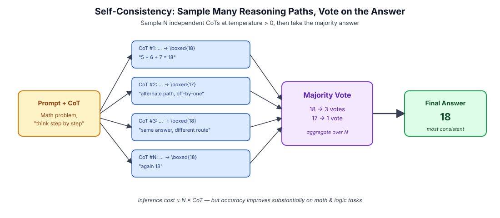
In practice, N = 8 to 40 is typical; gains keep coming up to N \approx 100 on hard math sets, then saturate.
A few properties worth internalizing:
\boxed{...} content).A close cousin is best-of-N, where instead of voting you score each candidate with a verifier or a learned reward model and pick the highest-scoring one.
Self-refinement uses the same model in two roles: as a generator that produces a draft answer, and as a critic that points out flaws in that draft. The generator then revises based on the critique.
Three roles, all played by the same model:
Repeat until the critic finds no more issues, or a budget is hit.
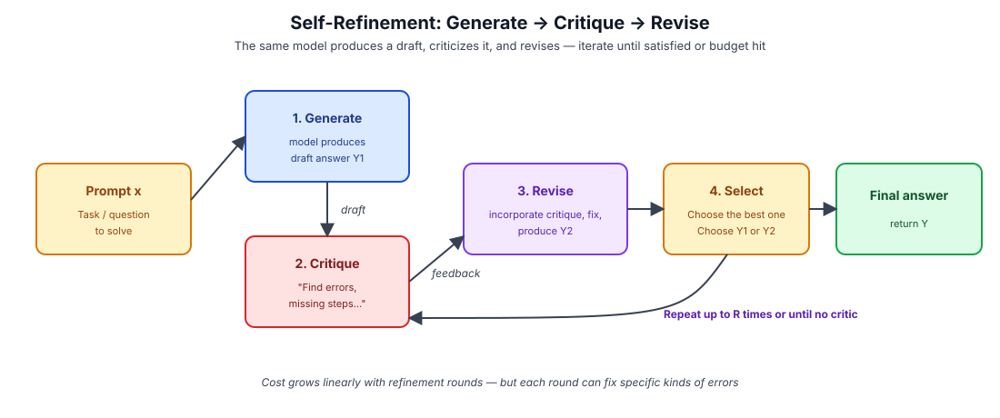
"how confident was the model, on average, at each step of producing this sequence." A higher (less negative) log-prob means the sequence is more natural under the model.
Every per-token \log \pi_\theta(y_t \mid x, y_{<t}) was already computed by the forward pass during generation — scoring is essentially free.
In code (Pytorch):
logits = model(input_ids).logits[:, :-1, :] # logits of each position from the model
log_probs = F.log_softmax(logits, dim=-1) # compute log-prob of all tokens on each position
targets = input_ids[:, 1:].unsqueeze(-1) # get the target tokens. Shifted by 1
token_lp = torch.gather(log_probs, dim=-1, index=targets).squeeze(-1) # look up the log-prob of the target token on each pos
seq_logp = (token_lp * completion_mask).sum(dim=-1) # sum of log-probs of all generated tokens in the sequence
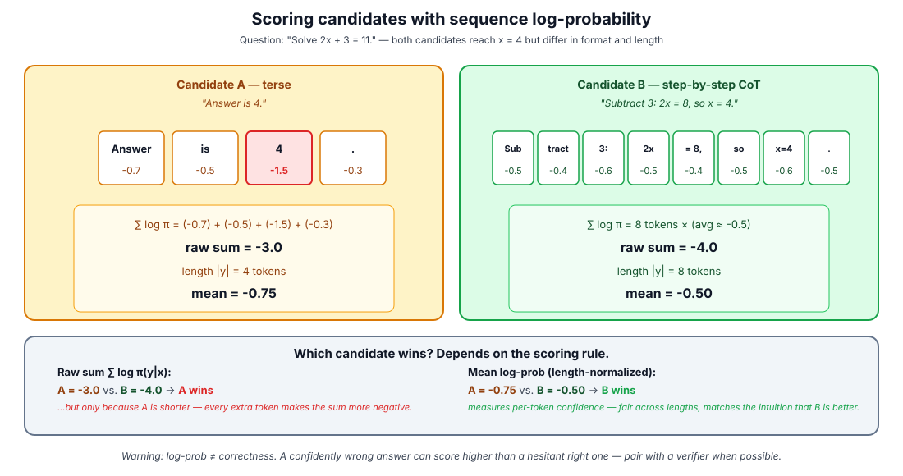
Log-prob is the cheap fallback, not the best signal.
These three techniques compose, and most reasoning systems in the wild use combinations.
A practical decision table for picking an inference-time strategy:
| Task | Recommended technique |
|---|---|
| Math / logic puzzles, accuracy critical | CoT + self-consistency, large N |
| Code generation with tests | CoT + best-of-N scored by tests |
| Open-ended writing / summarization | CoT + self-refinement |
| Latency-critical chat | Single short CoT, no sampling (greedy) |
| Agentic / tool-use | CoT + refinement, tool feedback as critic |
These knobs are bounded by the underlying model — eventually you stop getting returns. Which is exactly why we now turn to training-time scaling.
Inference-time scaling has hard limits:
Training-time scaling changes the model itself. Capabilities that required 100 self-consistency samples can be baked in so they appear in a single greedy decode. The economics flip: pay once at training, save every query.
Both curves are unlocked by the same thing: a verifiable reward signal that you can grind on for billions of tokens during training, and that the model has learned to chase at inference time.
RLVR converts inference-time compute (which the user pays) into training-time compute (which the lab pays). A model trained with more RL needs less thinking per query to hit a given accuracy.
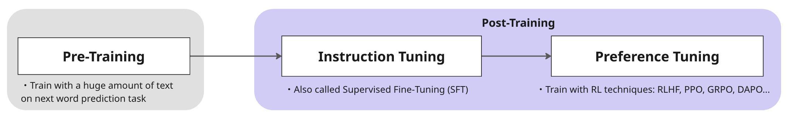
This is the canonical picture. In what follows we walk left-to-right and add detail to each box, ending with the rightmost box (preference / RL tuning) blown up into PPO and GRPO.
Almost every modern reasoning model follows the same multi-stage recipe:
We will spend the rest of the talk unpacking stages 1–5, with most attention on stage 5.
Pre-training is the phase where a randomly-initialized transformer is trained to predict the next token on a massive corpus of text.
Pre-training accounts for the majority of training compute spent on a frontier model — and per the Elicitation Theory of post-training, it sets the ceiling of what the model can ever do. Post-training only reaches that ceiling.
The full sequence likelihood factorizes by the chain rule, so the loss is simply the average per-token cross-entropy:
Pre-training implicitly teaches the model many things it was never explicitly supervised on:
Pre-training optimizes for "most likely next token." Post-training optimizes for "most useful next token." These are not the same objective.
A base model trained only on next-token prediction is a glorified autocomplete:
Given “What is 2+2?”, it might continue with another math question rather than answering.
Useful for completion, useless as a chatbot. Post-training fixes this by reshaping the response distribution:
Instruction tuning (a.k.a. SFT, supervised fine-tuning) closes the gap by:
(prompt, ideal response) pairs in a structured chat format.
The model emerges able to answer questions in the expected role-based format.
The supervised fine-tuning loss is just pre-training’s cross-entropy, but applied only to the assistant’s response tokens y given the prompt x:
In a chat template:
<|im_start|>user
What is 2+2?<|im_end|>
<|im_start|>assistant <-- everything before this is masked out
4<|im_end|> <-- gradients only on these tokens
The model learns to answer like a chatbot, but does not yet learn which answer humans prefer when several plausible ones exist.
SFT teaches the model a good answer for each prompt — typically the one a human labeler wrote. But for any prompt there are many plausible answers, varying in tone, length, helpfulness, safety, calibration.
Two responses can both be technically correct but vastly different in usefulness:
SFT cannot easily express “I prefer A over B.” We need a way to push the model toward preferred completions. That’s the job of preference tuning.
There are two main flavors of preference tuning, both still in widespread use:
For reasoning models trained on verifiable tasks, a third path opened up:
The classical RL loop: agent picks an action based on its policy; environment returns the next state and a reward; repeat. The reward function is given, not learned.
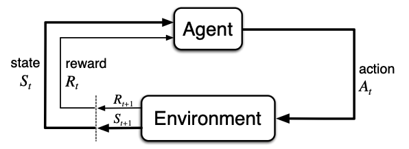
In classical RL, the environment is the source of truth for both state transitions and rewards. The agent’s job is to discover a policy that maximizes long-term reward through trial and error.
A reinforcement learning problem is formalized as a Markov Decision Process (MDP):
The agent picks actions according to a policy \pi(a \mid s), observes the next state and reward, and seeks to maximize the expected return:
Three properties of language modeling break the standard RL setup:
These three differences shape every algorithmic choice that follows.
For many tasks the reward function is hard to write down:
RLHF lets us optimize for behavior we can evaluate even when we cannot easily specify the reward function, by learning the reward from human comparisons.
The InstructGPT three-step RLHF recipe (figure 2 from Ouyang et al., 2022): demonstration data → reward model → RL against the reward model with PPO.
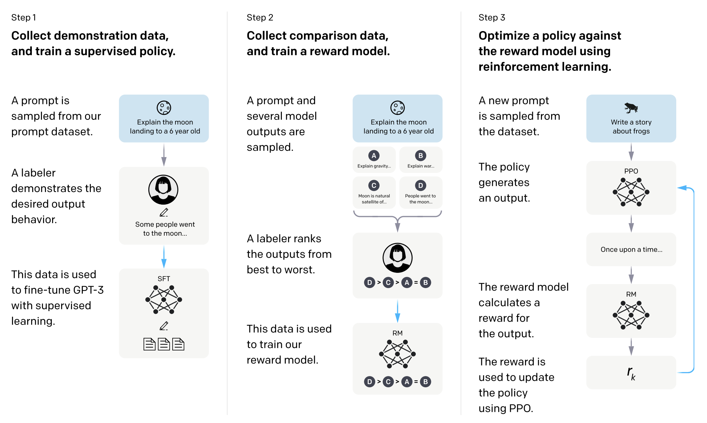
This figure became the canonical mental model for “how ChatGPT was trained” and remains the backbone of every modern recipe.
The foundation, identical to instruction tuning above:
After SFT, the model can follow instructions in a chat format. Now we need a way to compare candidate responses.
Collect comparison data: for the same prompt, two model outputs y_w (winning) and y_l (losing), labeled by a human (or AI) annotator.
Train a reward model r_\phi(x, y) to score the preferred completion higher:
The reward model is trained by minimizing the negative log-likelihood:
In other words: the reward is the model’s predicted log-odds that a given response would beat a random alternative.
The third step is where RL shows up. The maximizing objective:
Read this as “maximize reward, but don’t drift too far from the reference model (SFT model).”
The two terms:
Set the KL term aside for a moment and focus on the reward part of J(\theta):
How do we maximize this? Apply the log-derivative trick \nabla_\theta \pi_\theta = \pi_\theta \nabla_\theta \log \pi_\theta to push the gradient inside the expectation:
This is the vanilla policy gradient (REINFORCE): up-weight responses that got high reward, down-weight ones that didn’t.
We want many gradient steps per batch of rollouts. Trick: collect responses with a frozen snapshot \pi_{\theta_{\text{old}}}, then optimize \pi_\theta off-policy.
The importance sampling identity:
Setting p = \pi_\theta and q = \pi_{\theta_{\text{old}}}, and decomposing the response y into its tokens y_t given the prefix (x, y_{<t}), the per-token importance ratio is:
The objective J(\theta) = \mathbb{E}_{x \sim \mathcal{D},\, y \sim \pi_\theta}\!\left[ r_\phi(x, y) \right] (the objective, not the gradient) becomes:
We’ve also replaced the raw reward with the advantage \hat{A}_t — same idea, lower variance.
Now we can take many gradient steps on the same batch: \rho_t corrects for the drift between \pi_\theta and \pi_{\theta_{\text{old}}}.
PPO’s fix is brutally simple: clip \rho_t to a small trust region [1-\epsilon,\, 1+\epsilon], and take the pessimistic side of the bound.
How the min and clip work together at each token t:
min picks the more conservative of the two: gradient turns off
as soon as \pi_\theta tries to drift outside the trust
region.Slide 3 dropped the KL for clarity. In real RLHF pipelines, it comes back — but not in the loss. Instead, the per-token KL is folded directly into the reward:
The advantage \hat{A}_t is then computed from these KL-shaped per-token rewards \tilde{r}_t (typically via GAE), and plugged into the same clipped objective from slide 3:
Why inject KL into the reward instead of the loss?
With a verifiable reward (math correct? tests pass?), the proxy is exact and reward hacking largely disappears, so practitioners often set \beta = 0 and drop the reference model entirely. That’s one of the simplifications GRPO will exploit.
We’ve been treating \hat{A}_t as if it falls from the sky. In PPO it doesn’t — it’s computed from a second neural network, the value function V_\phi(x, y_{<t}), trained alongside the policy.
V_\phi predicts the expected future reward from token position t onward. The advantage is then “actual reward minus expected reward”:
(In practice this is smoothed across multiple steps via Generalized Advantage Estimation (GAE), but the intuition is the same.)
V_\phi is trained by regression to the empirical returns:
This is the cost GRPO is going to eliminate, by replacing V_\phi with a much simpler baseline computed from a group of rollouts.
GRPO was introduced in DeepSeekMath (Feb 2024) for math reasoning and was popularized by DeepSeek-R1 (Jan 2025). Its design is explicitly a response to PPO’s pain points in the RLVR setting:
GRPO’s idea: drop the value function entirely and use group statistics over multiple rollouts as the baseline.
For each prompt x, generate G completions y_1, \ldots, y_G (typical G = 4, 8, 16, 32).
Compute their rewards R_1, \ldots, R_G (e.g. all 0/1 from a math verifier).
Use the group’s reward statistics as the baseline:
Positive if it beat the group average and negative otherwise. No critic needed.
The full GRPO loss combines PPO-style clipped ratios with the group-normalized advantage and an optional KL penalty in the loss (not in the reward):
where the importance sampling ratio is per-token but the advantage \hat{A}_i is shared across all tokens in completion i (sequence-level advantage).
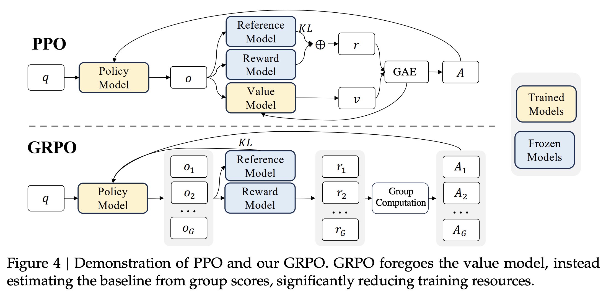
| PPO | GRPO | |
|---|---|---|
| Value function | Learned V_\phi (a whole model copy) | None |
| Advantage | Per-token via GAE | Sequence-level |
| KL penalty | Folded into reward (per-token) | Separate term in the loss (per-token) |
| Models in memory | 4 (policy, value, ref, RM) | 2–3 (policy, ref, RM or verifier) |
| Best fit | General RLHF with learned RM | RLVR with sparse 0/1 rewards |
| Implementation complexity | Higher | Lower |
The pattern: GRPO is PPO minus the value function, plus a statistical group baseline. The PPO-style clipping is preserved; only the advantage estimator changes.
Now we can name the recipe that powers DeepSeek-R1 and friends:
Apply the same RL algorithms (PPO, GRPO, REINFORCE, ...) to LLMs, but replace the learned reward model with a deterministic verifier — for math, the verifier extracts \boxed{·} and checks it against the gold answer; for code, it runs unit tests; for proofs, it runs the proof checker.
A side-by-side that makes the simplification visible:
| Component | RLHF | RLVR |
|---|---|---|
| Reward model training stage | Required | Removed |
| Reward model in memory | Required | Removed (replaced by a function) |
| KL penalty | Critical (defends against RM hacking) | Often reduced or removed |
| Reward signal | Continuous, learned, biased | Discrete (0/1), exact |
| Reward variance | Lower per sample, higher hacking risk | Higher per sample, lower hacking risk |
| Reward speed | One forward pass per completion | Microseconds (regex + compare) |
The fewer moving parts, the more compute can be poured into the actual policy gradient.
| Classical RL | RLHF | RLVR | |
|---|---|---|---|
| Environment | Real or simulated | Dataset of prompts | Dataset of prompts |
| State transitions | Stochastic, given by env | Deterministic (append token) | Deterministic (append token) |
| Reward source | Environment (known) | Learned reward model | Verifier (regex + compare, tests, …) |
| Reward granularity | Per-step | Per-response (terminal) | Per-response (terminal) |
| Reward type | Dense, continuous | Continuous, learned proxy | Sparse, discrete 0/1 |
| Main risk | Exploration | Reward hacking | Task generalization, mode collapse |
| Signature algorithm | DQN, A3C, SAC | PPO with reward model | GRPO with verifier |
| Canonical example | CartPole | InstructGPT / ChatGPT | DeepSeek-R1, o1 (math, code) |
A high-level pattern across the last three years of RL-on-LLMs:
As reward signals get more reliable, the algorithm gets simpler and the compute budget gets bigger. The cleverness moves from the optimizer to the data and infrastructure.
Qwen/Qwen2.5-0.5BHuggingFaceH4/MATH-500base: base-promptingcot: cot-promptingQwen/Qwen2.5-0.5B, training data: MATH (minus MATH-500)HuggingFaceH4/MATH-500base: base-prompting, cot: cot-promptinggrpo_with_kl: GRPO with KL penalty, grpo_no_kl: GRPO
without KL penaltyx-axis: 0 for no fine-tune (=base model), k>0 for fine-tuned with
GRPO @ k samplesQuestions / discussion
Contact: nptdat@gmail.com